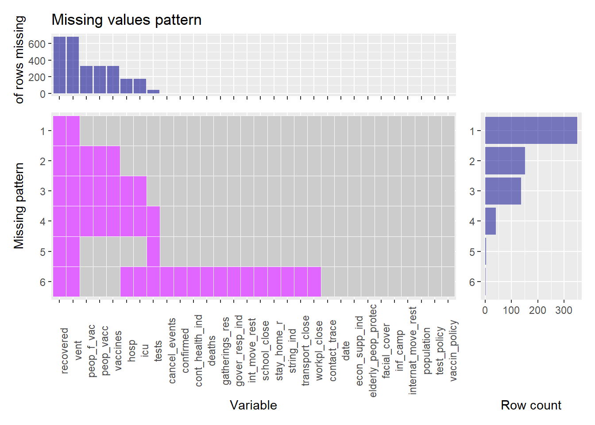

Chapter 4 Missing values
Our data consists of three different kind of data; macroeconomic and financial information that don’t contain missing values, mainly due to the structured nature of such information, and health data that does contain missing values. In this chapter, we analyze the missing data patterns that are presented in the health data from Mexico and USA, using the function visualize_missings. The code of the function can be found here.
library(dplyr)
library(tidyr)
source("missing_visualization.R")
inflation_mx <- read.csv("Data/COVID_mex.csv", stringsAsFactors = F)
inflation_us <- read.csv("Data/COVID_usa.csv", stringsAsFactors = F)
names(inflation_mx)<-c("date","confirmed","deaths", "recovered","tests","vaccines",
"peop_vacc","peop_f_vac","hosp","icu","vent","population",
"school_close","workpl_close","cancel_events","gatherings_res",
"transport_close","stay_home_r","int_move_rest",
"internat_move_rest", "inf_camp", "test_policy","contact_trace",
"facial_cover", "vaccin_policy", "elderly_peop_protec", "gover_resp_ind", "string_ind", "cont_health_ind","econ_supp_ind"
)
names(inflation_us)<-names(inflation_mx)Mexico missing values plots
visualize_missings(inflation_mx)visualize_missings(inflation_mx,percent = T)USA missing values plots
visualize_missings(inflation_us)
visualize_missings(inflation_us,percent = T)We can observe that there are no complete cases in any of the health data sets. This can be explained by the difficulty of gathering data in a health crisis and that some variables were not present at some point of the time considered, such as vaccinated people at the very beginning of the pandemic. Other possible reason is that the country does not release that kind of data for the public.
Particularly, for each country we have the following insights:
Mexico. From the missing values plots we can observe:
There are 14 missing values pattern in the dataset of Mexico.
There are three variables that have all their values as missing, and they represent the second most popular missing pattern in the data with presence in around 20% of the rows: Number of hospitalized patients on date (
hosp); Number of hospitalized patients in intensive therapy on date (icu); Number of patients requiring invasive ventilation on date (vent). This pattern suggests that this data is not release by the country.The pattern with most missing values is the one that includes the three above variables and vaccines related variables, with presence in around 35% of the rows: Cumulative number of total doses administered (
vaccines), Cumulative number of people who received at least one vaccine dose (peop_vacc) and Cumulative number of people who received all doses prescribed by the vaccination protocol (peop_f_vac). The missing values from vaccination data is clearly because there were not vaccines available at the beginning of the pandemic.All the aforementioned variables and the
recoveredvariable are the ones that have the most missing values observations among all the variables. This can suggests that the country could have had issues related to vaccines and in reporting recovered patients data.
USA: From the missing values plots we can observe:
There are fewer number of missing value patters, compared to Mexico. The dataset for USA has 6 missing values patterns.
There are two variables with all of their values as missings and that represent the most frequent pattern of missing values:
recoveredandvent. This pattern is present in almost 50% of the rows.The second most popular pattern with around 20% of the rows contains the two variables mentioned above and the variables related to vaccines:
peop_f_vac,peop_vaccandvaccines.The last pattern with significant presence in the data (around 20%) contain all the aforementioned variables and the variables
hospandicu.